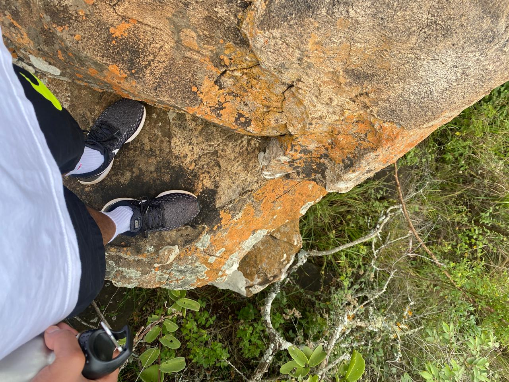
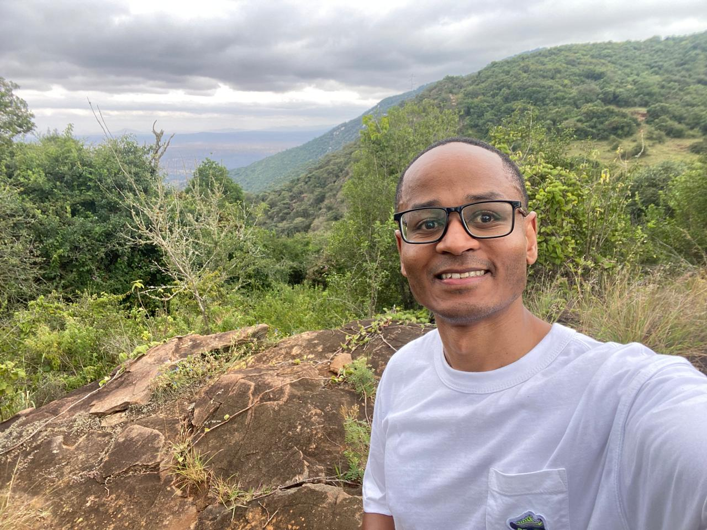
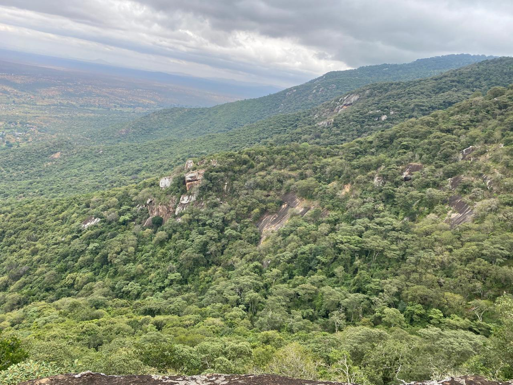
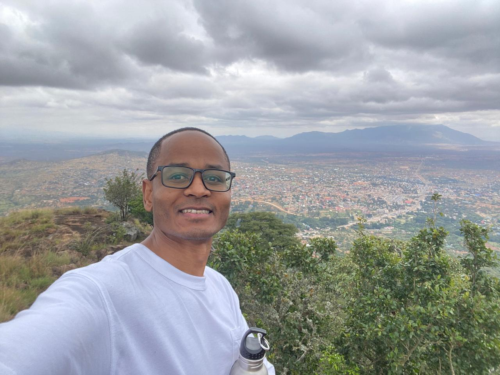
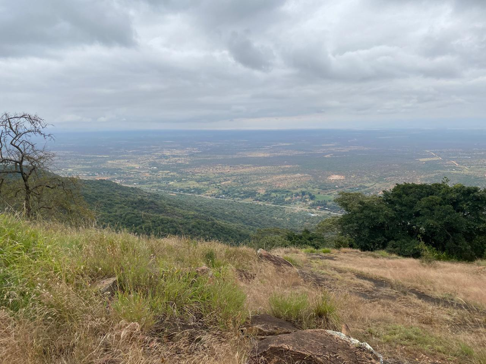
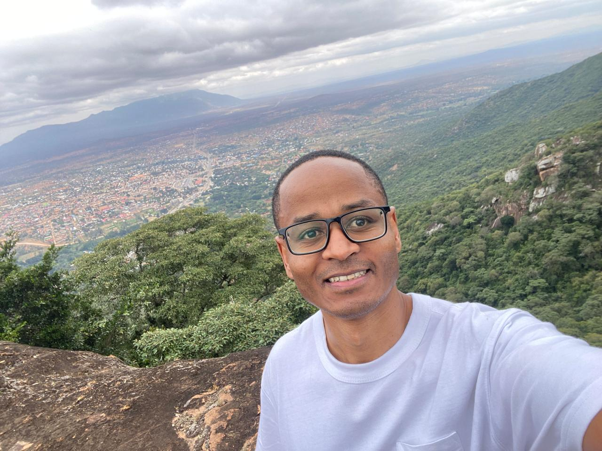
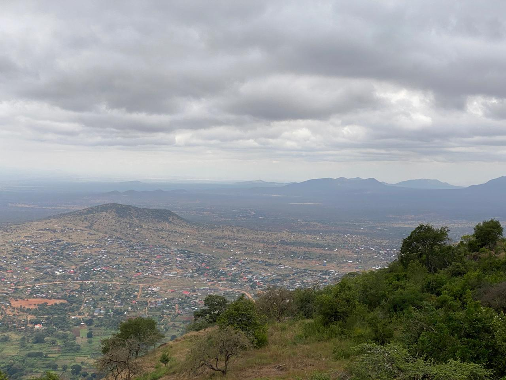

This was my hike in Namanga. We travelled to the border town with a group known as the Sunflower Club. We usually plan together for a hike at least monthly. This hike took place at Mount Ol Donyo Orok to be specific. We managed to reach elevation levels of up to 1770 meters in a few hours. Here are a few photos from the hike:






